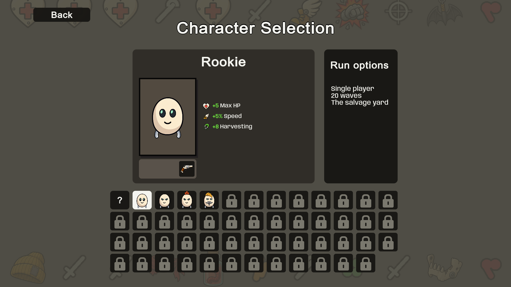
Cream human-like mascot; cybernetic display names preserve source gameplay data. 106 runtime items, 91 obtainable. All 62 weapon families imported; 40 currently obtainable. Full item/behavior parity remains unfinished.

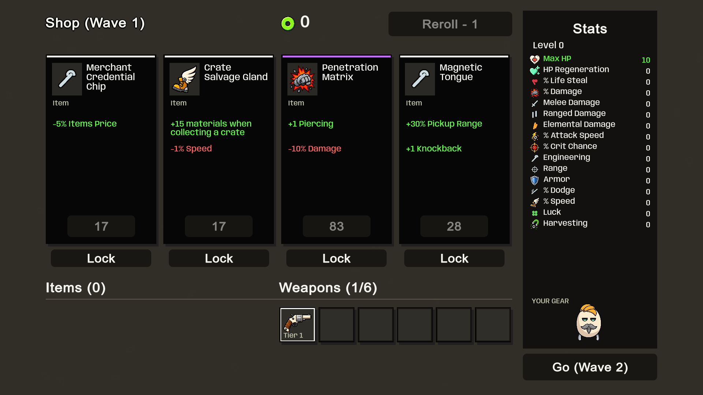
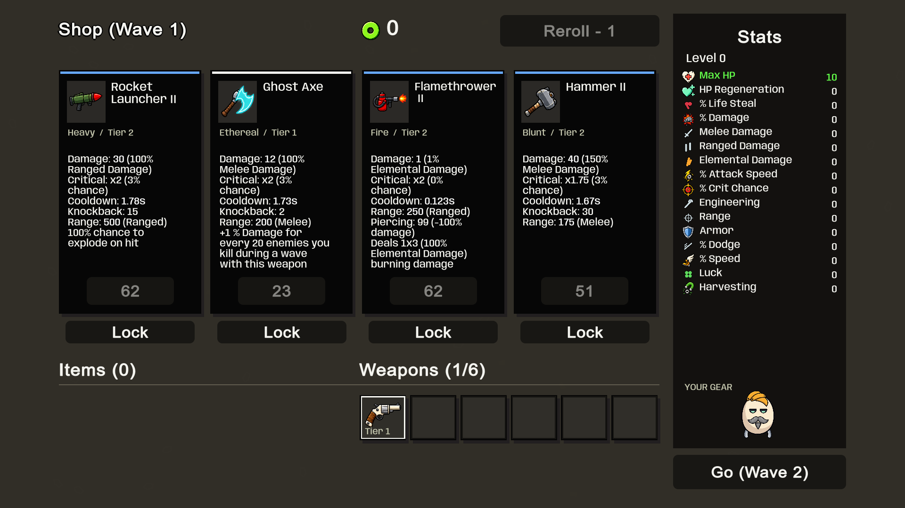
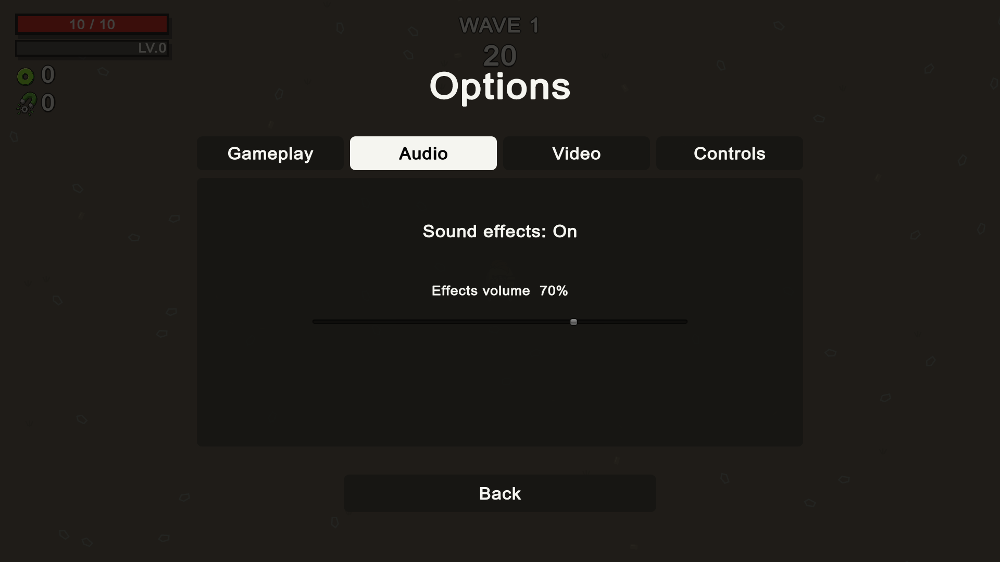
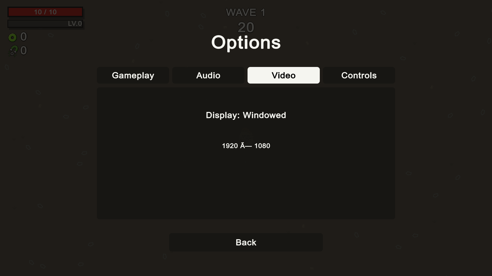
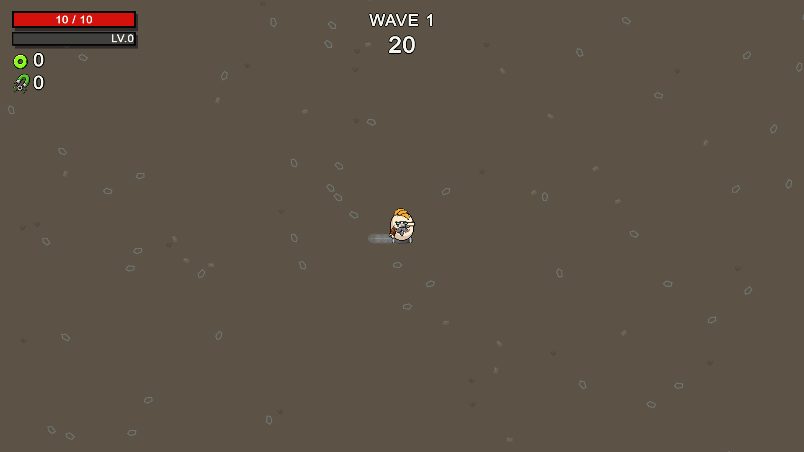
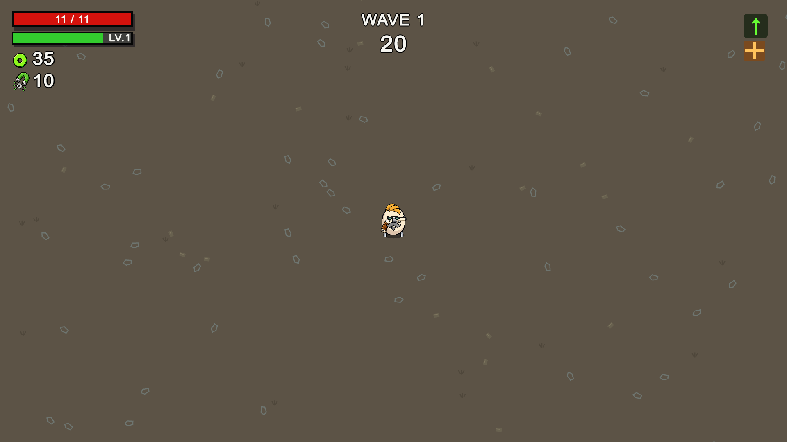
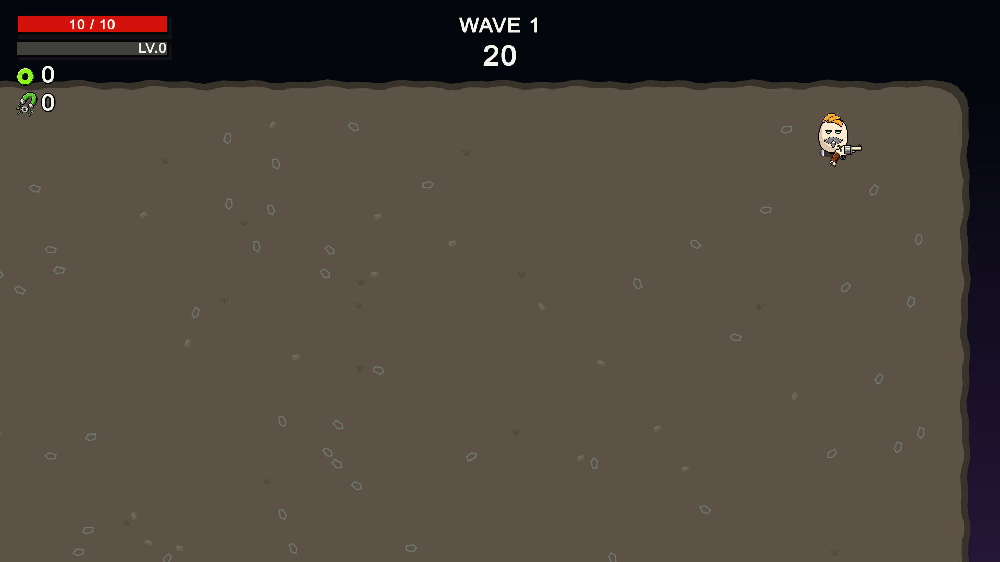
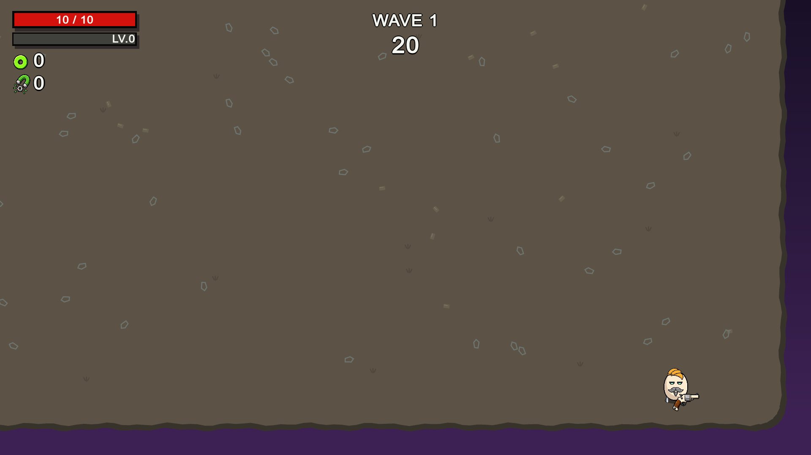
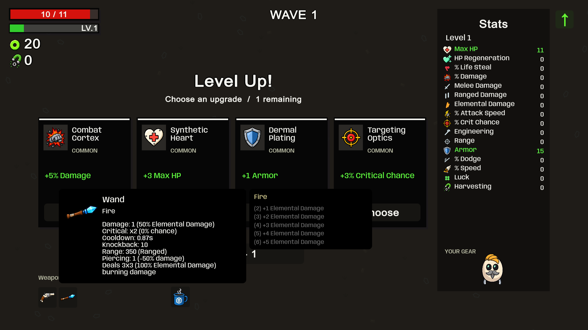
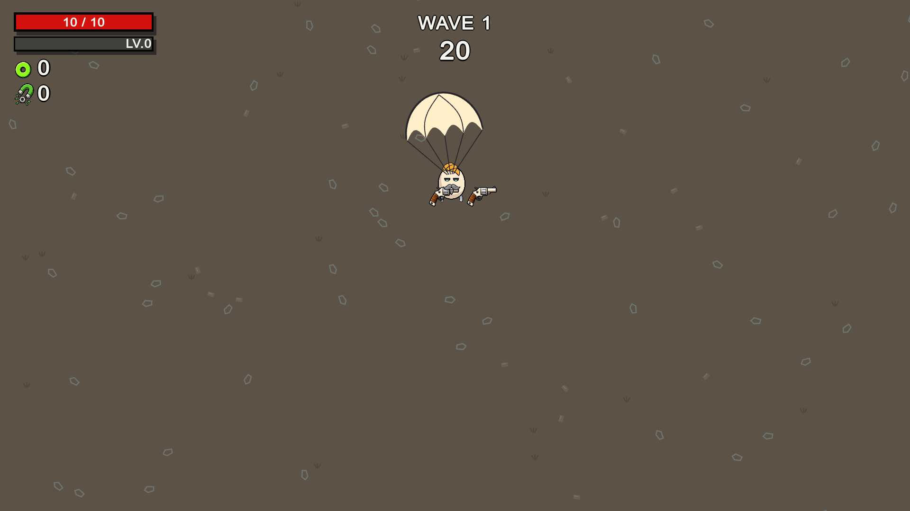
Staged runtime captures; automated combat tests use frozen targets. The campaign fixture grants invulnerability. These do not establish human-run balance or exact frame-by-frame reference parity.